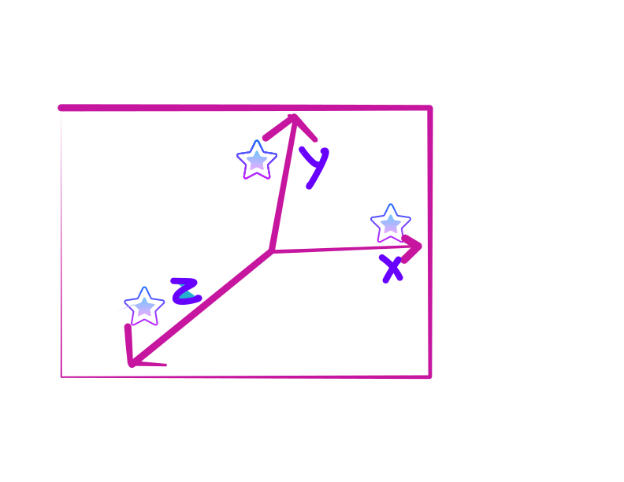
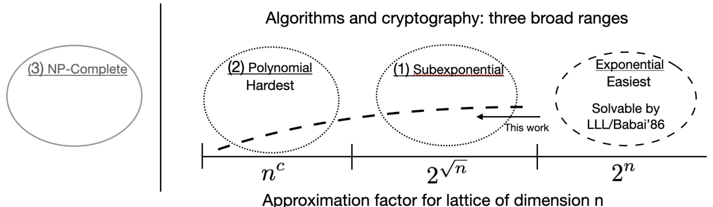

This site is dedicated to organizing and presenting what is known about the class of lattice problems that may have efficient algorithms. It is intended to be a living document that is updated as information comes in and as time permits.
The goal is to advance research on lattice algorithms. There are some impediments to working in this area such as its breadth, its increasingly technical nature, notational and language differences, the amount of folklore, and so on. This site provides an opportunity to have everything relevant to lattice algorithms written in one place, from one point of view, with consistent terminology, and targeted for a broader audience. Making it available to a broader audience can help build confidence that certain ranges may be difficult to solve.
Here is a picture from arxiv.org/abs/2201.13450:

The right three regions represent NP intersect CoNP, but most work has focused on the left two regions. From an algorithms perspective, the natural approach is to push from the right side where algorithms are known. Let's do that and determine where the boundaries are.
To participate send email to {{ site.email }}. Suggestions about all topics related to this site are welcome. This includes technical information, how to organize topics, how to visualize what is known, anything at all. Help can be public, private, or anoymous.
A lot of amazing tools have been developed in lattice-based cryptography over the last couple of decades. Perhaps they can help with algorithms for lattice problems in NP \(\cap\) CoNP also. There will be some translation necessary.
In computer science there are not good tools to prove that efficient algorithms don't exist to solve a problem. Most problem in NP either have a polynomial-time algorithm or they can be shown to be NP-complete. NP-complete are not generally believed to have efficient classical or quantum algorithms, but they are not the topic of this site. Here the focus in on problems that are in NP$∩$CoNP. This includes the class of polynomial-time solvable problems.
A problem \(A\) reduces to a problem \(B\), written \(A \leq B\), if an algorithm for \(B\) can be used to solve problem \(A\). A reduction is an algorithm and therefore can be specified by its resources. A reduction might be computable computable \(\leq_c\), polynomial time \(\leq\), randomized \(\leq_r\), or quantum \(\leq_q\). Reductions can be used for both algorithms and for hardness. Here \(\leq\) with no subscript will denote polynomial-time because it will be used the most.
One might say that \(\BDD \leq_q \LWE \leq \BDD\) to have a high-level understanding of the relationship, but what's missing in that statement are the parameters that give the relationships necessary meaning.
Let \(q(n) = 2^{3n}\).
The input to \(\GapSVL\) or \(\BDD\) is a lattice \(L\) of dimension \(n\).
| \(\LWE_{q(n)}\) |
| \(\Big\uparrow\) |
| \(\BDD\) |
| \(\Bigg\uparrow \quad i.e., \GapSVL \leq \BDD\) |
| \(\GapSVL\) |
Notes: